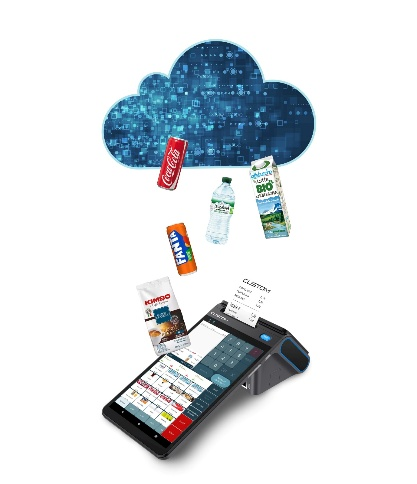
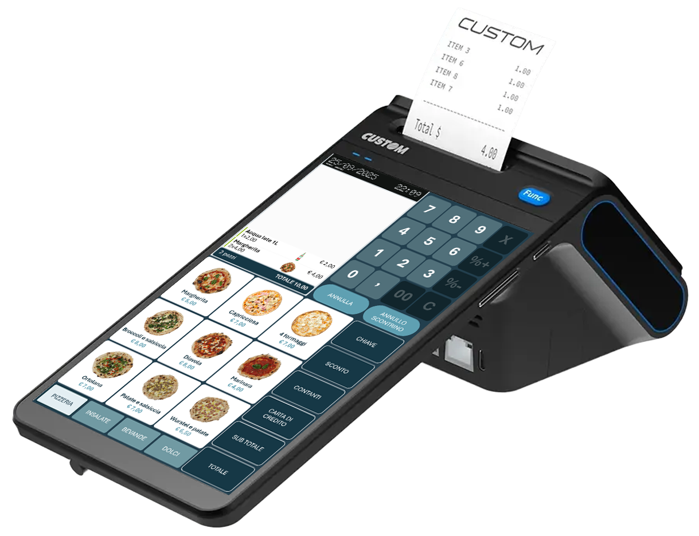
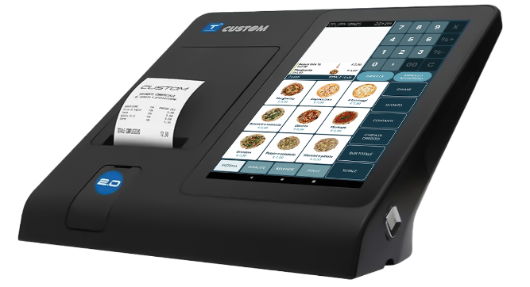

Contesto di Mercato

Il target primario: le startup del commercio
HyperRetailCloud si rivolge in modo naturale alle attività che aprono per la prima volta o che si trovano in una fase di avvio: startup del commercio al dettaglio, nuove aperture nel food & beverage, esercenti che ancora non conoscono l'evoluzione del proprio business e hanno bisogno di una soluzione flessibile, economica e immediatamente operativa.
La natura cloud e il canone mensile rendono HyperRetailCloud la scelta ideale in questa fase: nessun investimento iniziale elevato, nessun server da gestire, nessun aggiornamento manuale. Si parte subito e si cresce quando il business cresce.
Il vantaggio chiave per le startup
Chi apre un'attività non sa ancora esattamente come si evolverà: il numero di casse, i moduli necessari, il volume di vendite. HyperRetailCloud è espandibile fin dall'inizio con i moduli storici di Hyperetail e con altri che verranno resi compatibili nel tempo.
Il cliente può iniziare con il minimo indispensabile e aggiungere funzionalità man mano che l'attività cresce — senza cambiare software, senza migrazioni dati, senza costi di riconversione.
Il problema che HyperRetailCloud risolve
Chi apre una nuova attività si trova di fronte a scelte difficili: comprare hardware costoso, installare software complessi, formare il personale su sistemi rigidi. E spesso non sa ancora se avrà bisogno di una cassa, di tre, o di un totem self-service.
| Problema tipico della startup | Conseguenza | Come risponde HyperRetailCloud |
|---|---|---|
| Investimento iniziale alto in HW e SW | Rischio finanziario elevato prima ancora di aprire | Canone mensile, zero costi di installazione |
| Software non adatto alla crescita | Cambio gestionale dopo 1–2 anni con costi e caos | Espandibile con moduli Hyperetail progressivi |
| Aggiornamenti manuali e procedure IT | Tempo perso, errori, dipendenza da tecnici | Cloud automatico: sempre aggiornato senza interventi |
| Una sola piattaforma supportata | Rigidità nella scelta dell'hardware | Windows e Android, PC touch, totem, tablet, smartphone |
| Prezzi e listini aggiornati a mano | Errori, discrepanze, perdita di tempo | Anagrafica prodotti sempre sincronizzata dal cloud |
I settori di riferimento
Nella prima fase di commercializzazione, HyperRetailCloud si posiziona con particolare efficacia in quattro categorie di esercenti:
| Settore | Cosa risolve subito | Vantaggio HyperRetailCloud |
|---|---|---|
| ☕ Bar / Caffetteria | Conti sospesi, listini multipli, multiconto | Avvio rapido, canone mensile scalabile |
| 🚬 Tabacchi Easy | Anagrafica tabacchi aggiornata in tempo reale, barcode alternativi, gestione stecche | Zero procedure manuali Monopolio; espandibile con HyperStore |
| 🛒 General Store | Anagrafica automatica via barcode + cloud DB, gestione prodotti e listini | Ideale per startup: catalogo pronto dal primo giorno |
| 🌊 Attività stagionali | Canone attivo solo nei mesi di apertura; dati conservati in cloud tra una stagione e l'altra | Zero costi fissi nei mesi di chiusura; si riparte subito |
I settori in dettaglio
☕ Bar e Caffetterie
Il bar è uno dei punti vendita con la maggiore velocità di transazione e la più alta necessità di semplicità operativa. Il personale cambia spesso, i ritmi sono serrati, non c'è tempo per software complicati.
Cosa risolve HyperRetailCloud nel bar:
- Conti sospesi — il cliente ordina e paga dopo, senza bloccare la cassa
- Gestione listini — listino mattina, pomeriggio, serata: cambia automaticamente senza intervento
- Multiconto — più conti aperti contemporaneamente, staccati e ricongiunti con un tocco
- Multipiattaforma — funziona su tablet Android dietro il bancone o su totem per l'ordine autonomo
"Con HyperRetailCloud il barista si forma in pochi minuti: la schermata di vendita è semplice, personalizzabile e funziona su qualsiasi device già presente nel locale."
🚬 Tabacchi Easy
La tabaccheria è un caso d'uso estremamente specifico e tecnico: i prezzi dei prodotti da fumo vengono aggiornati periodicamente dal Monopolio di Stato, i barcode possono variare, e la gestione delle stecche richiede logiche di sfusamento automatico.
Con le soluzioni tradizionali, ogni aggiornamento del Monopolio richiede una procedura manuale: scaricare il file, importarlo, verificare i prezzi, aggiornare i barcode alternativi. Un'attività ripetitiva, soggetta a errori e spesso delegata al tecnico.
Cosa risolve HyperRetailCloud nei tabacchi:
- Anagrafica tabacchi aggiornata in tempo reale — prezzi e barcode sempre corretti, senza nessuna procedura manuale
- Barcode alternativi — supporto completo ai codici secondari dei prodotti da fumo
- Gestione stecche di sigarette — sfusamento automatico, giacenza corretta anche a livello di singolo pacchetto
- Aggiornamento automatico dal cloud — l'anagrafica è sempre allineata con le disposizioni del Monopolio
"Con HyperRetailCloud il tabaccaio non deve più preoccuparsi degli aggiornamenti del Monopolio: i prezzi sono sempre giusti, i barcode sempre aggiornati. Zero procedure, zero errori."
Espandibilità con HyperStore
Per le tabaccherie che crescono e hanno necessità di una gestione più strutturata del magazzino, degli ordini e delle giacenze, è sempre possibile ampliare HyperRetailCloud con il modulo back office HyperStore — senza cambiare il software di cassa, senza migrare i dati.
🛒 General Store e Negozi Generici
Il negozio generico è spesso gestito da un imprenditore individuale o familiare che ha bisogno di una cassa pronta subito e di un'anagrafica prodotti costruita con il minimo sforzo possibile.
Come funziona l'anagrafica cloud:
- L'operatore scansiona il barcode del prodotto con lo scanner.
- HyperRetailCloud cerca il prodotto nel database centralizzato in cloud.
- Il sistema propone automaticamente nome, immagine e dati del prodotto.
- L'operatore inserisce solo il prezzo di vendita, di acquisto e il reparto di riferimento.
- Il prodotto è in anagrafica, pronto per la vendita.
Cosa risolve HyperRetailCloud nel general store:
- Anagrafica automatica — scansioni il barcode, il cloud riconosce il prodotto e propone immagine e dati: inserisci solo prezzo e reparto
- Database centralizzato in cloud — catalogo prodotti sempre aggiornato e condiviso, senza inserimenti manuali
- Pronto all'uso dal primo giorno — zero tempi di installazione, il cloud fa tutto
- Gestione listini e sconti — imposta prezzi e promozioni direttamente dalla cassa
- Multipiattaforma — funziona su PC Windows, su tablet Android, ma soprattutto su Custom Edge e Fusion 2
- Scalabile — quando il negozio cresce, si aggiungono moduli senza cambiare sistema
🔄 L'opportunità del cambio RT: chi ha ancora la cassa a tasti
Esiste una seconda fascia di potenziali clienti altrettanto importante: tutti quegli esercenti che oggi lavorano con un registratore di cassa tradizionale a tasti — uno strumento che fa solo scontrino, senza anagrafica digitale, senza reportistica, senza connessione.
Questi commercianti stanno per essere obbligati a sostituire il proprio RT con un modello di nuova generazione. Questo cambio normativo è un momento di apertura unico: il titolare deve comunque spendere, deve comunque scegliere.
Cosa guadagna chi passa da cassa a tasti a HyperRetailCloud:
- Anagrafica prodotti digitale — finalmente sa cosa vende, a quanto e quanto ne ha in magazzino
- Reportistica in tempo reale — scontrini, incassi, articoli più venduti: tutto accessibile da smartphone
- Nessuna procedura di aggiornamento — il cloud aggiorna tutto in automatico
- Stessa semplicità di una cassa a tasti — la schermata di vendita è personalizzabile e intuitiva, la curva di apprendimento è minima
- Hardware moderno già obbligatorio — il cambio RT diventa il momento per fare il salto tecnologico senza costi aggiuntivi
Il momento giusto per proporre HyperRetailCloud
Quando un esercente deve cambiare il registratore telematico, si trova davanti a un bivio:
- ❌ Acquistare un nuovo RT tradizionale — stessa logica di prima, stesso limite, stesso costo.
- ✅ Passare a HyperRetailCloud — stesso momento, stesso investimento hardware, ma con un software moderno, connesso e scalabile.
Il canone mensile di HyperRetailCloud è spesso comparabile o inferiore ai costi di assistenza e aggiornamento di un RT tradizionale.
"Devi cambiare il registratore comunque. Con HyperRetailCloud non spendi di più, ma finalmente hai una cassa che lavora per te — non solo una macchina che stampa scontrini."
🌊 Le attività stagionali: paghi solo quando lavori
Un terzo segmento di mercato spesso trascurato ma ideale per HyperRetailCloud è quello delle attività stagionali: stabilimenti balneari, chioschi estivi, bar e ristoranti aperti solo in estate o in inverno, negozi di souvenir, punti vendita legati a fiere ed eventi.
Queste attività hanno un problema preciso: devono sostenere costi fissi anche nei mesi in cui sono chiuse. Con un software tradizionale — acquistato o con canone annuale — si paga tutto l'anno anche se si lavora solo 4 o 6 mesi.
Il vantaggio del canone mensile per gli stagionali
Con HyperRetailCloud il cliente attiva il canone solo nei mesi di apertura e lo sospende (o annulla) nei mesi di chiusura.
Esempio: un chiosco balneare aperto da maggio a settembre paga 5 mesi di canone invece di 12. Il risparmio è immediato e il rischio è zero.
Alla riapertura della stagione successiva, ritrova tutto esattamente come lo aveva lasciato: anagrafica, listini, storico — tutto sincronizzato in cloud.
Esempi di attività stagionali ideali per HyperRetailCloud:
- Stabilimenti balneari e chioschi — gestione bar, conti sospesi, listini differenziati
- Rifugi e locali di montagna — apertura invernale o estiva, multilistino, self-service
- Bancarelle e mercatini — cassa mobile su tablet o smartphone, anagrafica leggera via barcode cloud
- Punti vendita fieristici — attivazione rapida, zero installazione, operativo in pochi minuti
"Pago solo quando sono aperto. E quando riapro, ritrovo tutto come l'avevo lasciato. Non devo ripartire da zero ogni anno."
L'hardware ideale: Custom Entry Level
HyperRetailCloud si integra nativamente con i dispositivi Custom Entry Level: registratori telematici Android progettati per il punto vendita moderno, robusti, touchscreen e pronti per lavorare in cloud.
Custom Edge N+

Registratore telematico Android compatto, ideale per bar, tabacchi e negozi con spazio ridotto. Display touch, stampante integrata, connessione cloud nativa. La scelta perfetta per chi ha poco spazio sul bancone e vuole uno strumento moderno, veloce e sempre aggiornato.
Custom Fusion N 2.0 RT

PC POS all-in-one con schermo touch ampio, stampante integrata, Android. Perfetto per negozi e locali che necessitano di una postazione fissa strutturata con display generoso. Ideale per ristorazione con menu grafico, retail con catalogo articoli esteso, tabaccherie con gestione avanzata.
Il vantaggio dell'ecosistema Custom
HyperRetailCloud + hardware Custom Intrilever = un ecosistema unico con un solo interlocutore. Il partner installa, configura e supporta tutto. Nessun problema di compatibilità, nessun tecnico esterno, nessuna dipendenza da terze parti.
I segnali che un cliente è pronto ad acquistare
Durante la visita commerciale, questi sono i segnali che indicano un cliente caldo:
- ✅ Ha un'attività stagionale e non vuole pagare il software tutto l'anno
- ✅ Ha ancora una cassa a tasti e deve cambiare il registratore telematico
- ✅ Si trova davanti al rinnovo/cambio RT obbligatorio e non sa cosa scegliere
- ✅ Non vuole (o non può) investire in hardware costoso subito
- ✅ Ha già una stampante Custom o sta valutando di acquistarla
- ✅ Ha un bar, tabaccheria o negozio senza gestionale digitale
- ✅ Si lamenta degli aggiornamenti manuali dei prezzi (tabacchi)
- ✅ Vuole gestire tavoli o conti sospesi in modo semplice (bar)
- ✅ Fatica a costruire il catalogo prodotti e perde tempo ad inserire articoli
- ✅ Ha già provato un gestionale ma era troppo complicato
- ✅ Vuole una soluzione che cresca con lui senza dover cambiare tutto
Il ruolo del partner Custom S.p.A.
Voi non vendete solo un software. Portate a un esercente che spesso apre per la prima volta uno strumento che gli permette di partire subito, senza stress tecnico, con la certezza di poter crescere.
- Presenza fisica sul territorio — costruite fiducia nel momento più delicato: l'apertura
- Cliente già noto — spesso è già vostro cliente per la stampante telematica o il registratore di cassa
- Setup completo — il titolare non deve fare nulla da solo; voi configurate tutto
- Supporto locale — non un numero verde anonimo, ma una persona che conosce il negozio
Messaggio chiave
Non vendere funzionalità. Vendi tranquillità: "Apri domani, la cassa è già pronta. E quando il tuo business cresce, il software cresce con te."
← Precedente: Introduzione | Successivo: Il Prodotto →
Custom S.p.A. © 2026 — Uso riservato ai partner autorizzati